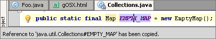
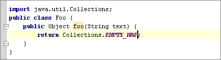

[編集] - [参照のコピー] アクションはエディタの現在の位置にフィールド/メソッド/クラス/ファイルへの参照を挿入するために使用できます。
例えば、java.util.Collections JDK クラスに移動してEMPTY-MAP フィールドで &shortcut:CopyReference;:を押します。

次に、Java ソースに戻り、&shortcut:$Paste;:を押します。

クラスに移動/シンボルに移動/ファイルに移動 ダイアログで参照をコピーすることもできます。 ルックアップ リストの要素の上で &shortcut:$Copy; を押すだけでコピーできます。